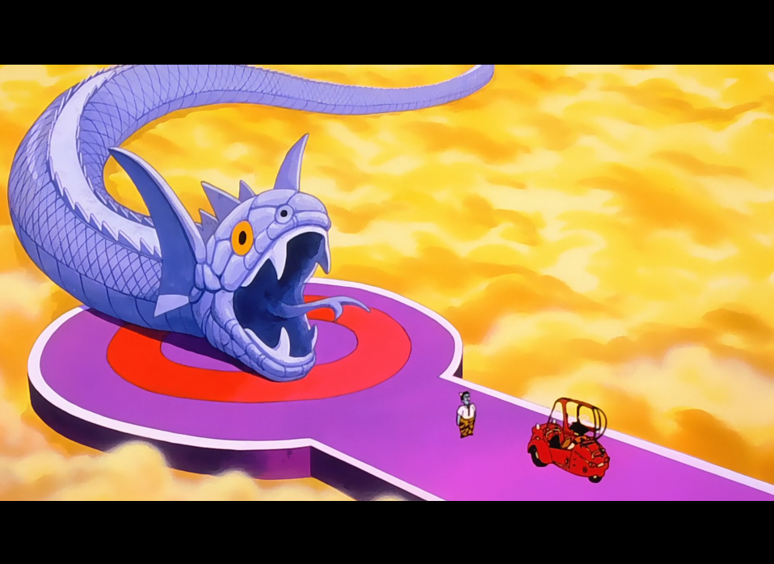

SAGA DES SAIYANS
Épisode 6 : Pour une victoire définitive - エンマ様もびっくり あの世でファイト
Piccolo emmène Son Gohan, toujours inconscient, pour l’entraîner. Krilin est quant à lui chargé d’annoncer la mauvaise nouvelle à Chichi.
Pendant ce temps, Son Goku, désormais mort, se retrouve dans l’au-delà face au roi Enma, le grand juge des morts. Accompagné du Tout-Puissant, qui parvient à convaincre Enma de lui laisser son apparence, Goku va pouvoir s’entraîner auprès de Maître Kaio. Mais avant cela, il doit d’abord parcourir le chemin du serpent.

(ci-dessus Son Goku découvrant le chemin du serpent)
 LISTE DES ÉPISODES
LISTE DES ÉPISODES